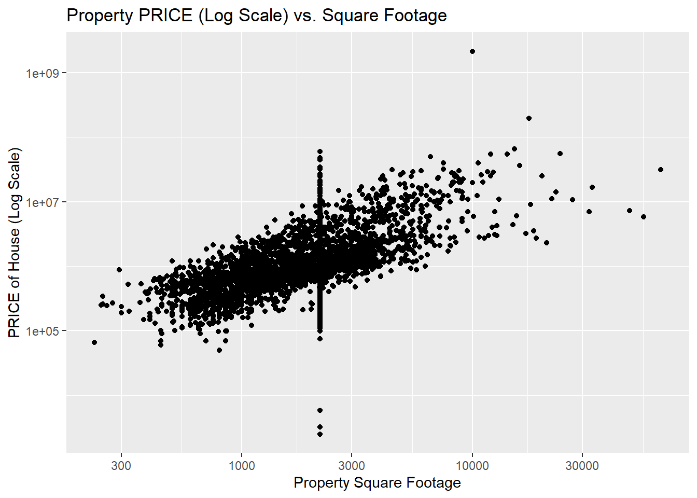
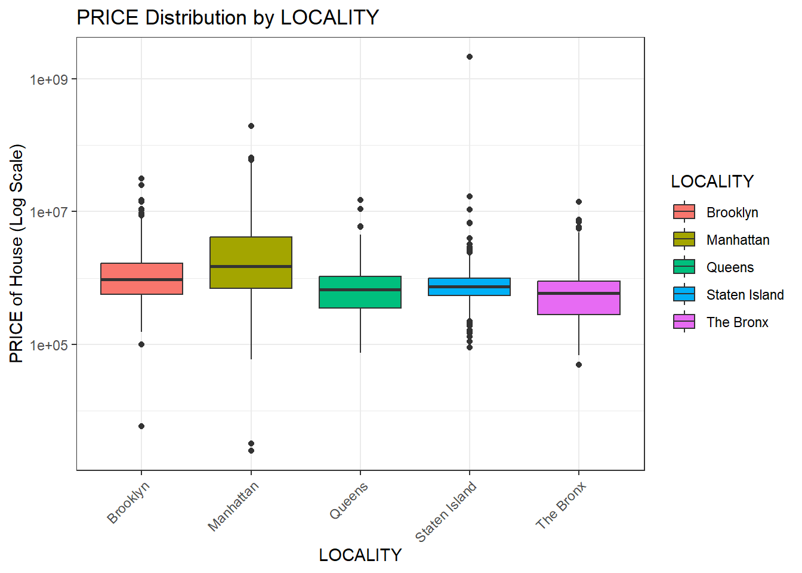
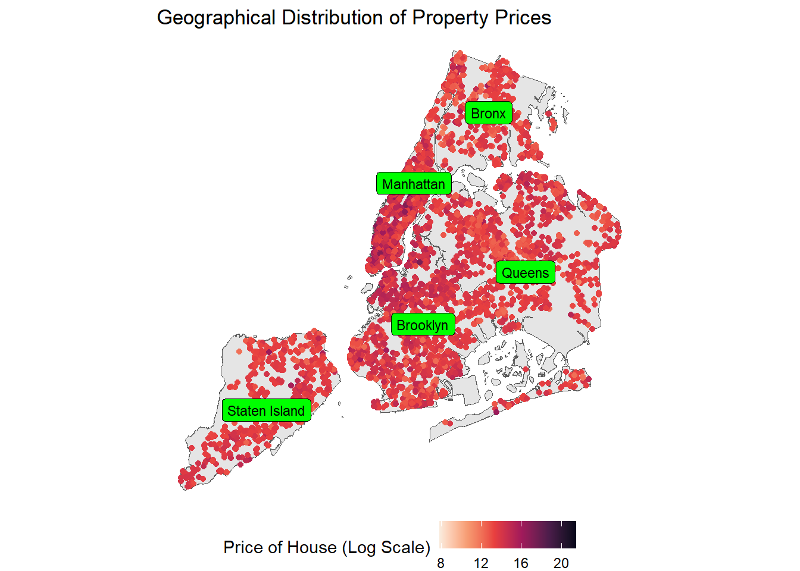

This is a dataset of houses in New York. The dataset contains the following columns:
PRICE: The PRICE of the house
BEDS: The number of bedrooms
BATH: The number of bathrooms
PROPERTYSQFT: The square footage of the house
TYPE: The type of the house
BROKERTITLE: The title of the broker
LOCALITY: The LOCALITY of the house
SUBLOCALITY: The subLOCALITY of the house
LATITUDE: The latitude of the house
LONGITUDE: The longitude of the house
STATE: The state in which the house is located
MAIN_ADDRESS: The address of the house
STREET_NAME: The street name of the house
The data is stored in a CSV file and contains 4801 rows and 17 columns. The dataset was obtained from Kaggle.
I am most interested in the following columns:
PRICE: The PRICE of the house
PROPERTYSQFT: The square footage of the house
LOCALITY: The LOCALITY of the house
SUBLOCALITY: The subLOCALITY of the house
LATITUDE: The latitude of the house
LONGITUDE: The longitude of the house
I will use these columns to visualize the distribution of the price of the houses in New York and to identify any patterns or trends in the data. I also plan to look the geographical distribution of the houses in New York with respect to the price of the houses in the different localities or boroughs.
Primary Visualization
Price vs Property Square Footage
library(ggExtra)
Warning: package 'ggExtra' was built under R version 4.2.3
p <-ggplot(data=NY_house_df, aes(x=PROPERTYSQFT, y=PRICE)) +geom_point(alpha =0.4, color ="#a45b9c") +theme_bw() +scale_y_log10() +scale_x_log10() +labs(x ="Property Square Footage", y ="Price of House (Log Scale)", title ="Price vs Property Square Footage") +geom_smooth(method ="lm", se =FALSE, color ="red")# Add marginal histogramsggMarginal(p, type ='histogram', col ='black', size =2, fill ='lightblue')
`geom_smooth()` using formula = 'y ~ x'
`geom_smooth()` using formula = 'y ~ x'
`geom_smooth()` using formula = 'y ~ x'

Interpretation
The scatter plot above shows the relationship between the price of the houses and the square footage of the houses. The x-axis represents the square footage of the houses, while the y-axis represents the price of the houses on a logarithmic scale. There seems to be a positive correlation between property square footage and PRICE, which is expected—larger properties tend to be more expensive. The price is plotted on a logarithmic scale because of a wide range of prices. This scale helps to visualize the relationship more clearly for properties that vary in orders of magnitude in price.
The graph above is a boxplot showing the distribution of property prices across different localities or boroughs of New York City: Brooklyn, Manhattan, Queens, Staten Island, and the Bronx. The y-axis represents the price of the houses on a logarithmic scale, while the x-axis represents the different localities. The boxplot shows the median, quartiles, and the range of the price for each locality. The boxplot shows that Manhattan has the highest median price, followed by Brooklyn and Staten Island. Queens and the Bronx have the lowest median price. The boxplot also shows the presence of outliers in each locality, which are represented by the dots outside the whiskers of the boxplot.
Median Price of different types of houses in different localities
NY_house_df |>group_by(LOCALITY, TYPE) |>summarise(median_PRICE =median(PRICE)) |>mutate(LOCALITY =fct_reorder(LOCALITY, median_PRICE)) |>ggplot(aes(x = LOCALITY, y = median_PRICE, color = LOCALITY)) +geom_segment(aes(xend = LOCALITY, y =0, yend = median_PRICE)) +geom_point() +scale_y_log10() +coord_flip() +labs(title ="Median price by locality and type of house",x ="Locality",y ="Median price of houses (log scale)") +facet_wrap(~TYPE) +theme(axis.title.y =element_blank())
`summarise()` has grouped output by 'LOCALITY'. You can override using the
`.groups` argument.
Warning: Transformation introduced infinite values in continuous y-axis

Interpretation
The graph above is a lolliplot showing the median price of different types of houses in different localities or boroughs of New York City: Brooklyn, Manhattan, Queens, Staten Island, and the Bronx. Each bar in the individual charts represents the median price for that particular type of housing status within each locality. The graph suggests that Manhattan has the highest median property prices across almost all types of housing statuses, while the Bronx and Staten Island often have the lowest.
Geographical distribution of Price
## install.packages("sf")library(sf)
Warning: package 'sf' was built under R version 4.2.3
Linking to GEOS 3.9.3, GDAL 3.5.2, PROJ 8.2.1; sf_use_s2() is TRUE
ggplot(data = shp) +geom_sf() +geom_jitter(data = NY_house_df, aes(x = LONGITUDE, y = LATITUDE, color =log(PRICE))) +geom_sf_label(data= shp, aes(label = BoroName), size =3, fill ="Green") +theme_void() +scale_color_viridis_c(direction =-1, option ="rocket") +labs(title ="Geographical Distribution of Property Prices",color ="Price of House (Log Scale)") +theme(legend.position ="bottom")
Warning in st_point_on_surface.sfc(sf::st_zm(x)): st_point_on_surface may not
give correct results for longitude/latitude data

Interpretation
The graph above is a map of New York City, showing the different boroughs or localities. The graph displays a geographical heatmap of property prices all over the city. The color intensity of the dots indicates the price level of each property. Warmer colors (oranges and reds) signify higher prices, while lighter colors (yellows) indicate lower prices, as per the logarithmic scale The darkest areas indicate where the most expensive properties are located. It appears that Manhattan (as inferred by the shape of the island) and certain parts of Long Island have the highest property prices.
Conclusion
The analysis of the New York City property dataset has provided insights into the distribution of property prices across different localities and types of houses. The analysis has shown that Manhattan has the highest median property prices across almost all types of housing statuses, while The Bronx and Staten Island often have the lowest. The geographical distribution of property prices has shown that Manhattan and certain parts of Long Island have the highest property prices. This analysis can be used by real estate investors, property developers, and potential homebuyers to make informed decisions about property investments in New York City. I would like to further investigate the relationship between the price of the house and the number of bedrooms, bathrooms, and the area of the house. I would also like to investigate the relationship between the price of the house and the year it was built. This will help to provide more insights into the factors that influence property prices in New York City. I would argue that my visualizations are effective in communicating the insights from the dataset. The boxplot and lolliplot are effective in showing the distribution of property prices across different localities and types of houses. The geographical heatmap is effective in showing the geographical distribution of property prices across New York City. The visualizations are clear, concise, and easy to understand, and they effectively communicate the insights from the dataset. The color choices and the use of a logarithmic scale in the visualizations are effective in highlighting the differences in property prices across different localities and types of houses.